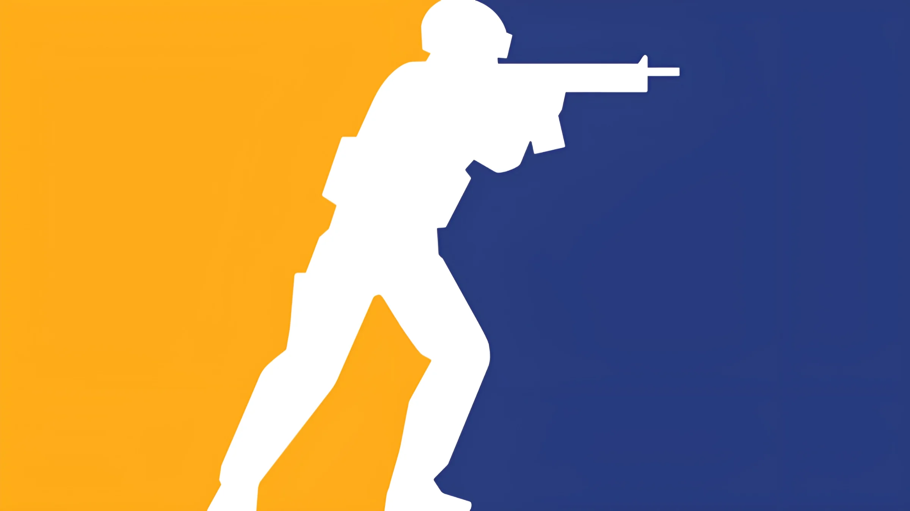

Welcome to the Counter-Strike Portal

My journey with video games began at a very young age, around seven, when I got my first NES console, which I shared with my sister. We spent countless hours laughing and challenging each other, as well as playing with friends. Years later, I discovered Counter-Strike in its early versions (1.3) alongside my childhood best friend on the computer. I was introduced to a whole new world where I could play with multiple players at the same time, competing to showcase our skills.
Eventually, I started participating in local tournaments, which required me to refine my character, discipline, strategic mindset, interpersonal skills, teamwork, and much more. I even developed leadership skills by becoming the team captain. This is why I decided to create this site dedicated to the competitive world of Counter-Strike.
Benefits of gaming
Building Friendships
Video games foster friendships and connections with people from all over the world. By playing in teams or participating in online communities, young players learn to communicate effectively, collaborate, and resolve conflicts. These interpersonal skills are essential in real life, helping children and teens build meaningful relationships and work better in teams.
Developing Leadership Skills
Engaging in competitive video games allows players to take on leadership roles, where they must make quick decisions and motivate their teammates. This environment promotes the development of soft skills such as time management, adaptability, and decision-making. Young gamers also learn to handle stress and overcome challenges, skills that are valuable in any area of life.
Practicing Discipline and Languages
Video games require practice and dedication to improve. This commitment helps players develop discipline and set clear goals. Additionally, by gaming with people from different countries, young players have the opportunity to practice other languages in a fun and engaging environment. Learning vocabulary and phrases in a new language becomes easier and more natural when combined with the excitement of gaming.